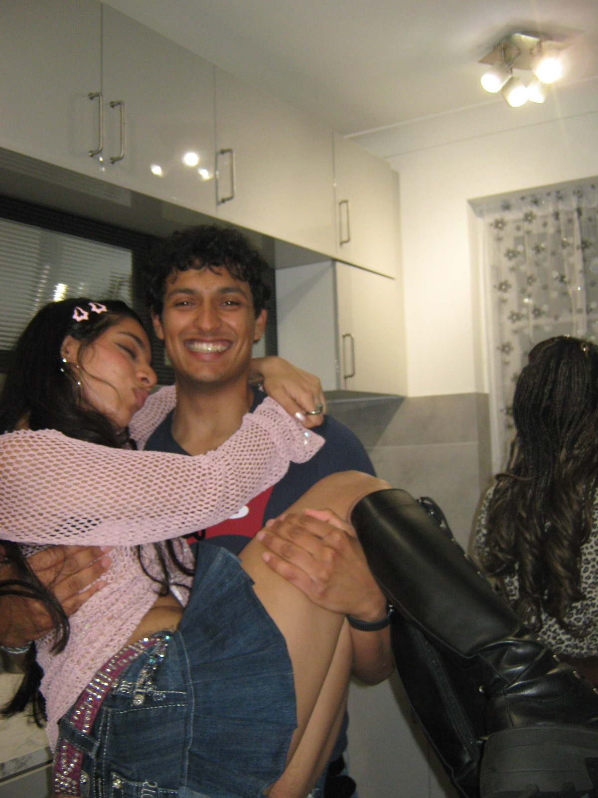
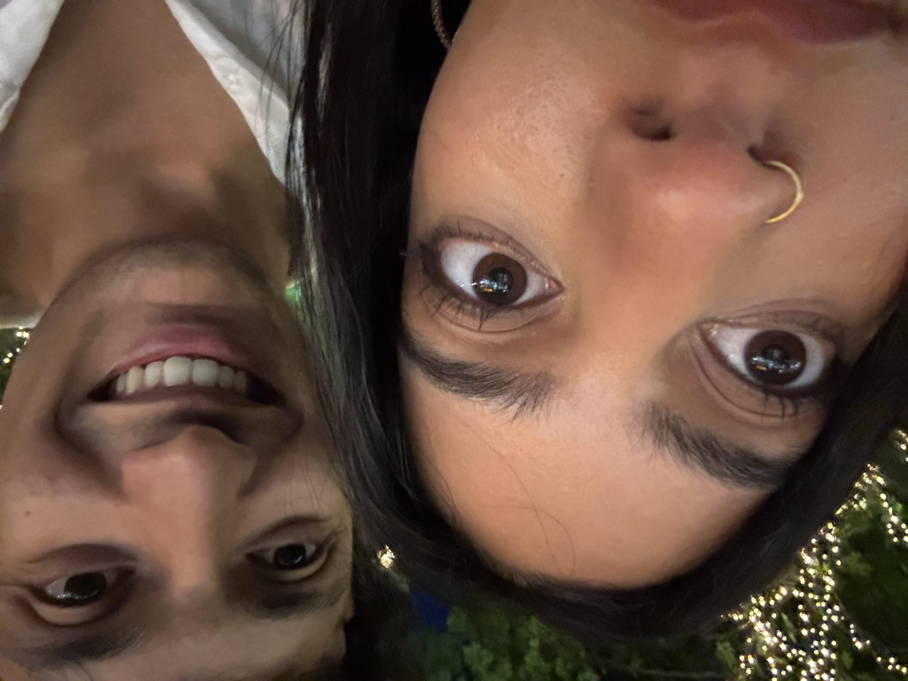

To Sahana
I MISS YOU ❤️
Love Josh
My Princess
My love, I want to explain what it means when I say I miss you. In you, I have someone who my heart is inextricably linked to. Wherever I go, no matter how far I am, my heart is always connected to you. It always wants to be close to you because it knows that you are my home, the safe place that it feels most comfortable with. I spent every second of every day thinking of you just so my heart can find comfort in our memories. But even our memories is not enough to comfort my heart. I want to be held by you, to hear you laugh (and meow), see your smile, caress your hair, hear your voice, hold your hand, walk around shops with you, watch you get excited about having a sweet treat together, kiss your forehead and the list goes on. When I say I miss you, it is an expression from my heart that it is suffering without you and it needs you to feel safe again (all the time).
There have been so many times on this trip where I just want to experience all these things with you and only you. Everything I do I imagine doing it with you and know how much better it would be. All I want is to experience life with you, and being apart from you takes this away from me. I know I don't say it nearly enough but in every single experience here I have missed you because all I think about is the memories we could have made here. I wake up missing you, go through the day missing you and every night I miss you. The only solace I get is from seeing you smile on our FaceTimes but even that just makes me want to be with you more. I miss you so so much and can't wait till our hearts can be reunited.

I want to fireman carry you all the time too!
Your love
Seeing you always wear my star necklace is my favourite thing. I think it's because your fashion / accessory choice is really important to your outfits so to see you wear it day to day and make an active choice to include it because it's from me makes me feel so loved. It's these small things you do that really make me appreciate having a partner who values my love and actually cherishes it. This is the feeling that is the most important to me and is truly the main thing that comprises the foundation of my love for you. Another thing you do in the same manner is always include me in your Instagram plans. I always saw tiktoks of this and so experiencing this with you is a first for me and I really really appreciate it because it just makes me feel special that I get this exclusive sneak peak before everyone else.

You are my blessing ✨
The quality i admire the most in you is that you're willing to sacrifice things in your life just for me. And not just willing but SO willing such that you don't even hesitate. It can be small things like putting me first when ordering food and making sure we get what I like, making sure I have a nice time when with your friends and staying longer just for me to big things like always sacrificing your sleep just to talk to me, no matter how short the time. As time goes on, I am also appreciative that you have grown so that you are comfortable to assert your own needs because that's just as important as sacrificing your own needs. I want to make sure your wants and needs are fulfilled and I won't stop spoiling you until you are satisfied (which judging by your vinted sprees might be never!). There are so many qualities in you that make you such an amazing and dedicated lover. I need you to wake up every morning and realise that because there are so many things you do that so many partners would not and most importantly you don't even give it a second thought. I really respect this about you and to be honest I strive to be the same (I'm slowly learning!). I say you're a blessing because I know how lucky I am to have you and this does not even account for your lengness. I love you so much and I cannot wait to be back with you so we can go back to being cuddly cat babies.

Bro is getting up close and personal
Thank you for reading
THE END
Love Josh